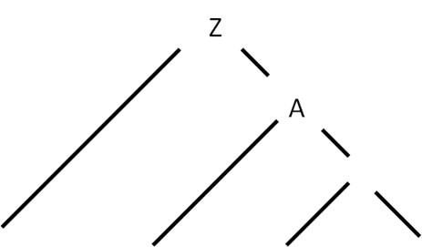
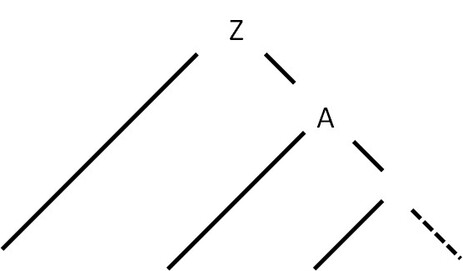

Диагностика и нейтрализация синтаксических ошибок
Необходимо реализовать нейтрализацию синтаксических ошибок, используя метод Айронса.
Метод Айронса
Суть метода Айронса заключается в следующем:
- При обнаружении ошибки (во входной цепочке в процессе разбора встречается символ, который не соответствует ни одному из ожидаемых символов), входная цепочка символов выглядит следующим образом: Tt, где T – следующий символ во входном потоке (ошибочный символ), t – оставшаяся во входном потоке цепочка символов после T. Алгоритм нейтрализации состоит из следующих шагов:
- Определяются недостроенные кусты дерева разбора;
- Формируется множество L – множество остаточных символов недостроенных кустов дерева разбора;
- Из входной цепочки удаляется следующий символ до тех пор, пока цепочка не примет вид Tt, такой, что U => T, где U ∈ L, то есть до тех пор, пока следующий в цепочке символ T не сможет быть выведен из какого-нибудь из остаточных символов недостроенных кустов.
- Определяется, какой из недостроенных кустов стал причиной появления символа U в множестве L (иначе говоря, частью какого из недостроенных кустов является символ U).
Метод Айронса для автоматной грамматики
Разрабатываемый синтаксический анализатор построен на базе автоматной грамматики. Реализация алгоритма Айронса для автоматной грамматики имеет следующую особенность.
Дерево разбора с использованием автоматной грамматики:

Таким образом, при возникновении синтаксической ошибки в процессе разбора с использованием автоматной грамматики, в дереве разбора всегда будет только один недостроенный куст:

Поскольку единственный недостроенный куст – это тот, во время построения которого возникла синтаксическая ошибка, то это единственный куст, к которому можно привязать оставшуюся входную цепочку символов.
Предлагается свести алгоритм нейтрализации к последовательному удалению следующего символа во входной цепочке до тех пор, пока следующий символ не окажется одним из допустимых в данный момент разбора.